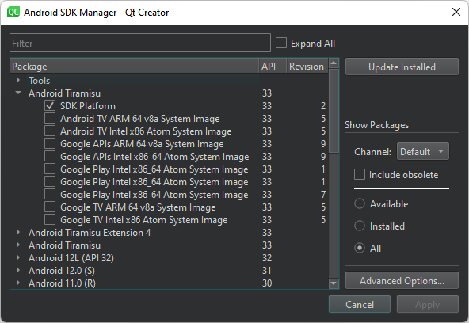
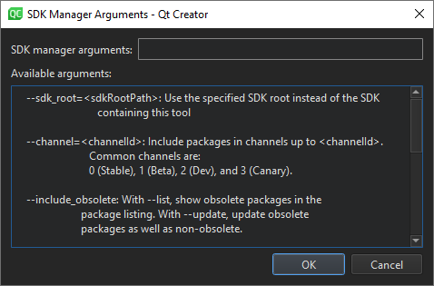

Manage Android SDK packages
Since Android SDK Tools version 25.3.0, Android has only a command-line tool, sdkmanager, for SDK package management. To simplify SDK management, Qt Creator has an SDK Manager for installing, updating, and removing SDK packages. You can still use sdkmanager for advanced SDK management.
To view the installed Android SDK packages, select Preferences > SDKs > Android > SDK Manager.

Show SDK packages
To show packages for a release channel in Package, select the channel in Show Packages > Channel. Common channel IDs include Stable, Beta, Dev, and Canary.
To show obsolete packages, select Include obsolete.
To filter packages, select Available, Installed, or All.
Update SDK packages
To update the installed Android SDK packages:
- Select Update Installed.
- Select the packages to update.
- Select Apply.
Set sdkmanager options
To set advanced sdkmanager options:
- Select Advanced Options.
- In SDK Manager arguments, enter sdkmanager options from Available arguments.

See also How To: Develop for Android and Developing for Android.